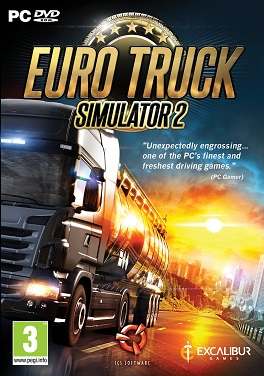
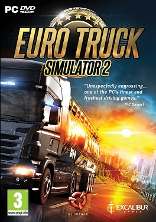

Список игр
Топ 10 симуляторов
Симуляторы — имитаторы, механические или компьютерные, имитирующие управление каким-либо процессом, аппаратом или транспортным средством. Чаще всего сейчас слово «симулятор» используется применительно к компьютерным программам (обычно играм).
С появлением игр симуляторов люди смогут попробовать себя в самых разнообразных ролях.
Игры: симуляторы автомобилей и мотоциклов, самолётов, космических кораблей, танков, поездов, подлодок, различных видов спорта и т. п. Основным принципом симулятора является точное воспроизведение особенностей какой-то тематической области (например: автосимулятор должен максимально точно воспроизводить физические особенности машин). 
С появлением игр симуляторов люди смогут попробовать себя в самых разнообразных ролях.
Игры: симуляторы автомобилей и мотоциклов, самолётов, космических кораблей, танков, поездов, подлодок, различных видов спорта и т. п. Основным принципом симулятора является точное воспроизведение особенностей какой-то тематической области (например: автосимулятор должен максимально точно воспроизводить физические особенности машин). 